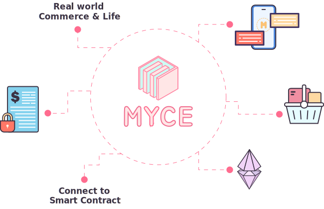

The Bloom platform
MYCE를 통해 실생활 결제 영역에서 사용할 수 있는 서비스로서 이렇게 사용되는 MYCE는 토큰을 실물로 고정하는 가치를 증명하는 토큰이 되며, 리워드 토큰 등 네트워크 블록체인과 연계되어 생태계 경제활동에 참여할 수 있습니다.

Token Economy
MYCE 토큰은 차별화된 비즈니스 모델을 만들어 암호화폐의 유용성을 높이고, 비즈니스 네트워크에 참여하는 불특정 다수가 함께 가치를 공유하는
새로운 생태계 패러다임을 구축하고자 한다.


Utility Token
사용자는 다음과 같은 여러 가지 방법을 통해 유틸리티 토큰을 사용하여
서비스 권한을 얻을 수 있습니다.
- 기능 A : 멤버십 업그레이드
-
 기능 B : DAO 투표권 행사
기능 B : DAO 투표권 행사